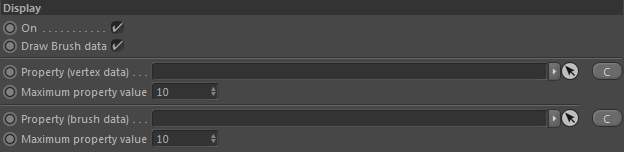

Display

On
Turns on/off the editor display for this mesh completely.
Draw Brush data
Check to activate the drawing of brush data. See "Particle Brush" tool for more information.
Property (vertex data)
Drop here a point property node for the mesh vertex property you would like to be drawn on the mesh.
Maximum property value
The maximum value the linked Property (vertex data) may contain in order to assign a drawing color intensity (i.e. white).
Property (brush data)
Drop here a point property node for the brush data property you would like to be drawn on the mesh.
Maximum property value
The maximum value the linked Property (brush data) may contain in order to assign a drawing color intensity (i.e. white).